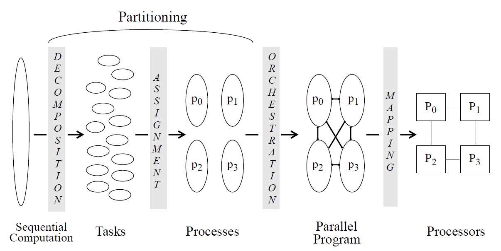

并行程序设计
并行程序设计并行算法设计过程方法一(Parallel Computer Architecture)方法二(并行计算-结构·算法·编程)方法一中面向性能的程序设计划分阶段的性能问题协调方面的性能问题映射(处理器)方面的性能问题并行计算模型并行算法设计基本策略并行算法常用设计技术并行算法运行时间估计
并行算法设计过程
方法一(Parallel Computer Architecture)
任务是并行程序所能处理的并发性最小的单元；进程完成程序中一个任务子集；进程通过映射到处理器完成任务。一个任务只能由一个处理器处理，而处理器可以执行多个任务或进程。
- 将计算分解为任务；
- 将任务分配给进程；
- 在进程之间协调必要的数据访问、通信和同步；
- 将进程映射或绑定到处理器。

问题分解
目标是揭示足够的并行性，尽量保证所有的进程在所有时间都忙。
任务分配
目标是要在进程之间做负载平衡，减少进程之间的通信量，还要减少运行时管理这种分配的开销。分配的方法有静态分配和动态分配。
进程协调
主要是如何组织数据结构，如何进行任务调度，以及如何组织和表达通信和同步。
进程映射
将抽象的进程映射到物理处理器上运行。
方法二(并行计算-结构·算法·编程)
分为四个步骤：划分(Partitioning)、通信(Communication)、组合(Agglomeration)和映射(Mapping)，简称PCAM设计过程。
划分
划分就是将原计算问题分为小的计算任务。有域划分(数据划分)和功能划分。域划分是根据算法的输入或输出数据，或者中间结果来进行划分；功能划分是根据被执行的计算进行划分。
通信
有四种模式：局部/全局通信、结构化/非结构化通信、静态/动态通信、同步/异步通信。
局部通信时，每个任务与较少的几个近邻通信；全局通信中每个任务通信范围很广。
结构化通信通常与其通信对象形成一张图或树；而非结构化通信更为复杂。
静态通信时通信对象不改变；而动态通信中，通信对象可能随运行状况不同而改变。
同步通信中，接收和发送方均知道何时接收何时发出；而异步通信需要接收方发送显示消息向发送方请求数据。
组合
目的时通过合并小尺寸的任务来减少任务数，同时考虑是否值得进行数据和/或计算的重复。
大量细粒度任务可能增加通信代价和任务创建代价：表面-容积效应，一个任务的通信需求比例与它所操作的子域的表面积，而计算需求比例于子域的容积。
重复计算：有时可以采用重复不必要的计算来减少通信时间。
映射
目的是一是把能够并行的任务放到不同处理器上提高并行度，二是把需频繁通信的任务置于同一处理器上提高局部性。
基于域分解常采用负载平衡技术，如递归对剖、局部算法、概率方法、循环映射等。基于功能分解时常采用任务调度算法
方法一中面向性能的程序设计
划分阶段的性能问题
由Amdahl定律得到加速比简单上限如下：
平衡负载和减少同步等待时间过程分为4步：
-
在分解中识别足够并发性，减少Amadahl定律影响(功能并行和数据并行)
-
决定管理并发性方式(静态/动态)
静态分配需要提前指导不同任务的相对工作量，若有其他应用干扰，会限制方法的鲁棒性；
动态分配分为半静态技术和动态任务调度。半静态通过计算上个阶段的工作负载分布来调整负载分配；动态任务调度采用队列的方式进行。
-
确定并发性粒度
-
降低操作序列化化和同步代价
-
减少固有通信，常考虑通信对计算的比值而不是绝对通信量。
求取固有通信计算比和负载平衡折中的原则时区域分解
-
减少额外工作。如需要计算一个好的负载平衡分配方式的代价很高、计算出现冗余、协调多个并行程序等。
由此可见上述公式的分母可写为：
协调方面的性能问题
-
减少附加通信
可以开发程序的非本地数据的时间局部性，如成组技术；以及空间局部性。
-
将通信结构化
因此可以考虑降低开销(将若干小消息组成大消息以降低消息频率)；降低延迟(通过硬件辅助或网络拓扑映射)；减少冲突；或者增加通信与计算或其他通信的重叠。
映射(处理器)方面的性能问题
分布存储通并行系统结构上，并行执行时间有5个分量
- 忙有用：处理器花在指令执行上的时间，这些指令本来在串行程序也要执行。所有处理器忙有用时间=串行执行忙有用时间；
- 忙开销：处理器花在只有并行程序需要而串行程序不需要的指令上的时间；
- 数据局部：处理器等待自己存储系统完成的时间；
- 数据远程：处理器等待通信的时间；
- 同步：处理器进程等待其他进程给出某个时间的信号后，才推进进程。
并行计算模型
并行计算模型可以随并行计算机结构演变过程分为：第一代共享存储模型(CPU计算，数据访问和通信传输不做区分，PRAM/APRAM等)、第二代分布存储模型(将CPU计算和通信操作分开，BSP/LogP等)、第三代分布共享存储模型(将数据访问重点分开)。
1. PRAM模型
PRAM(Parallel Random Access Machine)，分为不允许同时读同时写(PRAM-EREW)、允许同时读不允许同时写(PRAM-CREW)、允许同时读和同时写(PRAM-CRCW)。PRAM又称为共享存储的SIMD模型，有有限或无限个功能相同的处理器，且在任何时刻个处理器均可通过共享存储单元交换数据。
2. 异步PRAM模型
APRAM的指令类型有：全局读、局部操作、全局写、同步。在APRAM中计算由一系列用同步障分开的全局所组成。
3. BSP模型
BSP(Bulk Synchonous Parallel)是个分布存储的MIMD计算模型，计算由一系列用全局同步分开的、周期为L的超级步组成。在各超级步中，每个处理器均执行局部计算，并通过选录其接收和发送消息；然后作以全局检查，以确定该超级步是否已由所有的处理器完成：若是，则前进到下一超级步，否则下一个L周期被分配给未曾完成的超级步。
BSP处理器可以在常数因子范围内模拟PRAM处理器。
4. LogP模型
LogP模型时一种分布存储的、点到点通信的多处理机模型。利用L(延迟latency)、o(额外开销overhead)、g(处理器可连续发送或接收消息的最小时间间隔gap)来刻画通信网络的特性。
若LogP模型中，若g=L=o=0，LogP就等同于PRAM。若BSP模型将子集同步缩小到只有子集内只有一对收/发者，则此时BSP模型就时LogP模型。也就是说 。
5. 层次存储模型
层次存储模型考虑存储系统是分层的。包括Memory-LogP模型、DRAM(h)模型、HPM模型等。
并行算法设计基本策略
- 串行算法直接并行化(如快速排序算法直接将选取主元并行)
- 从问题描述开始设计并行算法(如重新设计KMP算法中适配函数)
- 借用已有算法求解新问题(如用矩阵乘法解决最短路径问题)
并行算法常用设计技术
- 均匀划分技术、方根划分技术、对数划分技术、功能划分技术
- 分治设计技术
- 平衡树设计技术
- 倍增设计技术
- 流水线设计技术
并行算法运行时间估计
Brent定理：设 是并行算法 在 个时间步内执行的运算量，则 使用 台处理器可在时间 内完成。